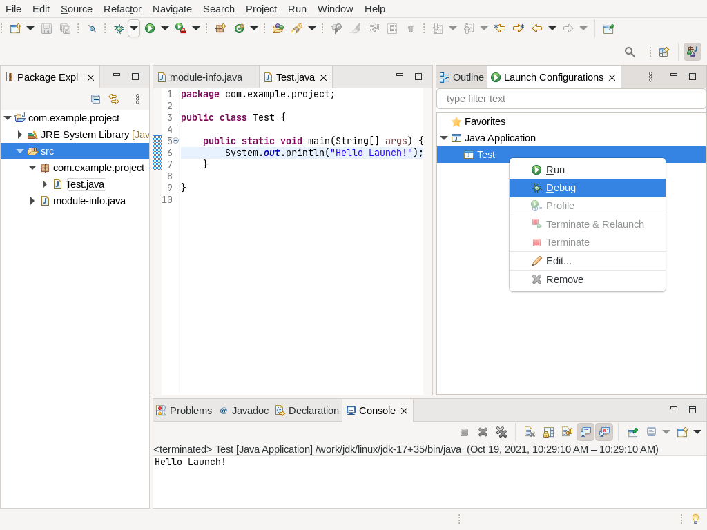
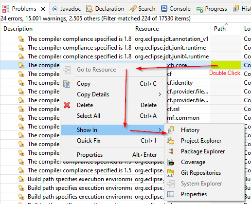
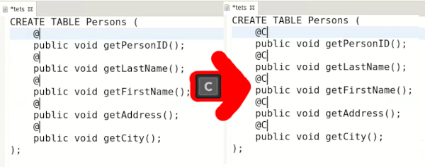
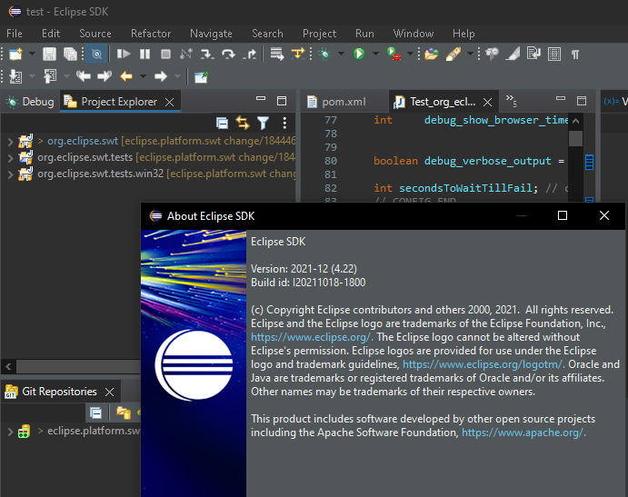

Here are descriptions of some of the more interesting or significant changes made to the Eclipse Platform for the 4.22 release of Eclipse. They are grouped into:
Plug-in developers will also be interested in the corresponding What's new document in the plug-in developer's guide.
We also recommend to read the Tips and Tricks.
Views, Dialogs and Toolbar |
|
| External browser used by default | By default the Eclipse IDE will open the default system browser instead of the internal browser. You can change this setting via Windows -> Preferences -> General -> Web Browser. |
| Launch Configuration View |
The new Launch Configuration View allows quick access to all your launch configurations without the need to
enter the launch dialogs.
 You can launch (run, debug, profile, etc.) as well as terminate and/or relaunch running configurations directly from the view. The view also provides API which allows third party contributions to hook into the view and provide "launchables". |
| Double click on Problem without File shows in default view |
Double click on Problems executes "Go to Resource". But there are cases where no File (column "Path") is
associated with the Problem. In those cases "Go to Resources" cannot be executed. Instead the default "Show
In" action is now executed.
 This default depends on the perspective. |
Text Editors |
|
| Multiple text selection |
Support for multiple selection has been added to Text Editors. Multi selections allow most edit operations
(text replacement or insertion, extend selection to next word or to next line, copy/paste...) to apply
simultaneously on all ranges.
 Multiple strategies are available to enable multi-selections:
|
Themes and Styling |
|
| Windows dark theme styles title bar |
The windows title bar in the dark theme on Windows OS is now styled in the default dark theme.
 |
General Updates |
|
| Ant 1.10.12 | Eclipse has adopted Ant version 1.10.12. |